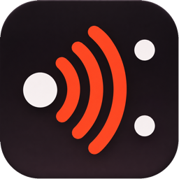
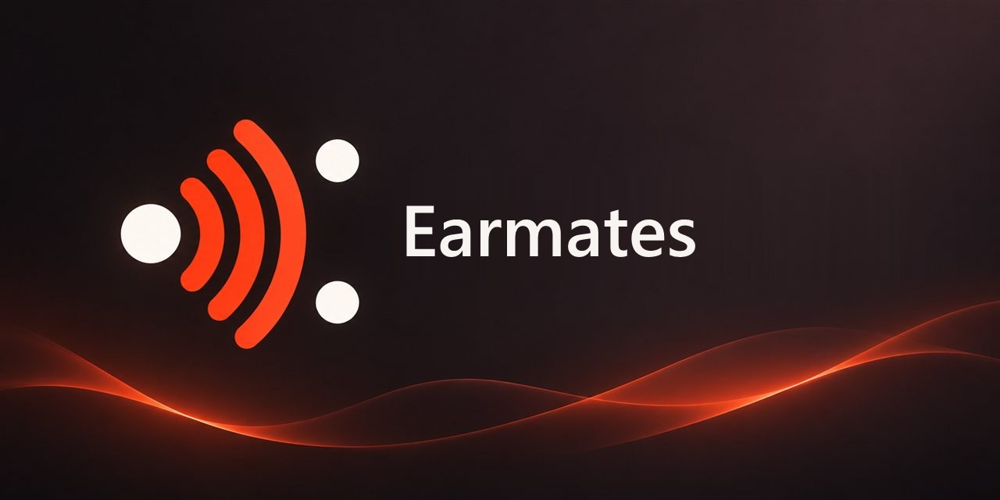
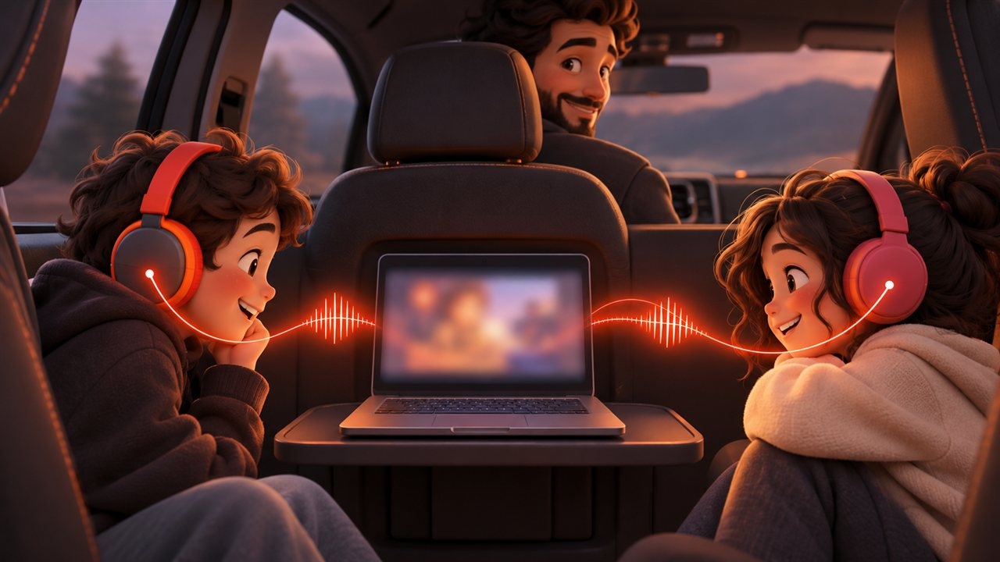

AudioShareOne laptop.
Everyone in their own headphones.
AudioShare plays the same sound on several Bluetooth headphones, earbuds and speakers at once, on Mac and Windows. Each person gets their own volume.
Free · works without internet · collects nothing

Made for sharing

Partners
Watch a film in bed together, each with your own earbuds, without waking anyone.

Friends
Share a show or a match on a train, a plane or in a café, with nobody's sound leaking out.

Road trips
Keep the kids happy in the back seat with one laptop and several headphones.

Family movie night
Give a grandparent who hears less their own louder volume.
How it works
- Connect your headphonesBluetooth, wired, USB, whatever you have. Connect them to the computer as usual.
- Switch them on in AudioShareEvery headphone and speaker appears as a card. Click Test to hear which one is which.
- Press Share audioEverything the computer plays (Netflix, YouTube, Spotify, games) now plays on all of them.
- Works with AirPods, Sony, Bose, Beats, Galaxy Buds, JBL and any other headphones
- Its own volume slider for each person
- Test chime to find out which headphone is which
- Keeps playing if one headphone disconnects, and rejoins it when it's back
- Remembers your choices for next time
- Puts your sound back to normal when you stop
Install in 2 minutes
Mac
- Download AudioShare-mac.zip and double-click it.
- Drag AudioShare into Applications and open it.
- The Mac says it "can't check" the app. Click Done.
- Open System Settings → Privacy & Security and click Open Anyway.
This only happens once, because AudioShare isn't from the App Store.
Windows
- Download AudioShare-windows.zip, right-click it → Extract All.
- Move AudioShare.exe to your Desktop or Documents.
- Double-click it. If Windows says "Windows protected your PC", click More info → Run anyway.
This only happens once, because AudioShare isn't from the Microsoft Store.
Step-by-step guide and troubleshooting: full guide on GitHub.
Questions
Can I connect two Bluetooth headphones to one Mac or Windows laptop?
Yes, that's exactly what AudioShare does. macOS and Windows normally play sound on one output at a time. AudioShare plays it on all the headphones and speakers you switch on, each at its own volume.
Does it work with AirPods, Sony, Bose, Beats or Samsung earbuds?
Yes. Any headphones or speakers the computer can play sound on work: Bluetooth, wired, USB, the headphone jack, and monitors or TVs over HDMI.
How many headphones can I use at once?
As many as the computer can connect. With Bluetooth, about 3 at once works best; more can crackle because they share one radio. Wired headphones don't count toward that.
Will the sound be in sync?
Wired headphones and the laptop's speakers are nearly instant. Bluetooth headphones each have a small delay that differs by model. On Windows you can line them up with the Delay sliders. On a Mac, the same kind of headphones for everyone works best.
Does it work for Netflix, YouTube, Spotify and games?
Yes. AudioShare shares everything the computer plays, from any app or website.
Does it work on iPhone or iPad?
No, Apple doesn't allow it. iPhone and iPad have their own Share Audio for two sets of AirPods or Beats: open Control Center, tap the AirPlay icon, then Share Audio.
Is it free? Is it safe?
Yes and yes. It's free, works without internet, and collects nothing. The warning the first time only appears because AudioShare isn't from an app store.